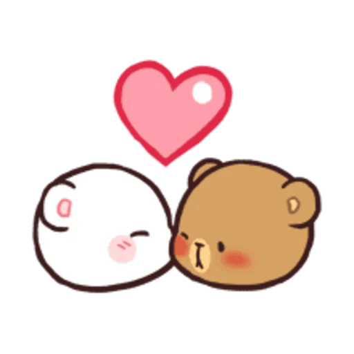

I love you, Shann.
The Bread we knew from a year ago would be quaking if she saw herself saying that nonchalantly.
She'd be lying on the bed, or probably on the couch, smiling at the pics her best friend would send her.
Best Friend. I always described Shann as my best friend. She was always the person I would tell things first to.
She was always there, albeit irritating at times (especially whenever she got lucky 5-star pulls in Genshin, I never told her about this),
but she was always there. I didn't know if this would last; I didn't know if she would always be the one I turned to first,
that wasn't until it came to the point when I did all my firsts with her.
Hi was the first ever message I sent her, followed by a Pusheen Cat Sticker waving hi. It was July 2, 2016. 8:11am. A Saturday. I was the first to message.
Even then, I had the balls. I didn't know it then, but this girl would be someone very, very special in my life.
Fast forward to today. I'm sitting at my desk at 1:16am, on July 6, 2023; Exactly 6 years, 11 months and 28 days since my first ever message to her.
A lot has changed, like the fact that I start the day thinking of her; how my thumbs move on their own without a single thought, as if it's only
human nature to subconsciously type the words "I love you," or rather, "I love you, Shann" (with a couple heart emojis, oh how I love modern technology);
or how I go to sleep crying because she's so pretty in my grasp (holding my phone with her picture open, not in real life).
Oh has a lot changed.
It's been 6 years. I'm looking forward for more. The future will change us immensely, but I hope that my love for you will stay constant.
No matter the highs or lows that will inevitably come. No matter what relationship we'll come to have.
Happy July 6, Shann. I love you. Always.
Please don't ask me if I can make anything here a heart. I don't know how.
With Love, Garn.
